Task 1
max_ray_depth = 0
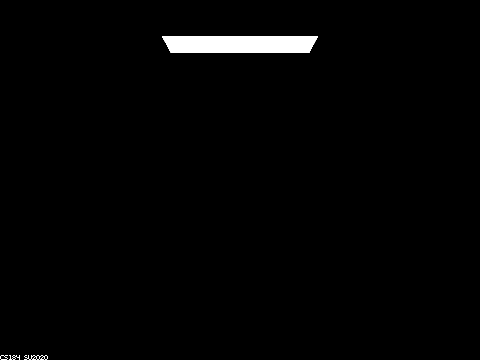
The is nothing visible except the light since there is only depth 0.
max_ray_depth = 1
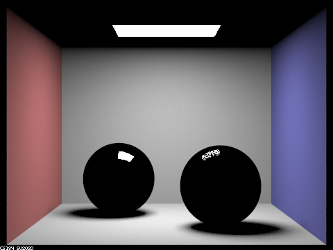
We can see the walls are now visible and the spheres appear to have the direct reflection of the lights.
max_ray_depth = 2
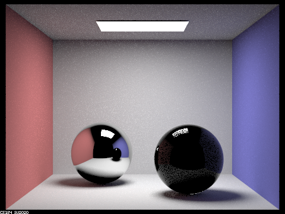
The room including the ceiling are all now visible; the mirrored surface of the leftmost sphere seems to reflect its
surroundings. The rightmost sphere appears to be dark, this is due to refraction not being visible yet. There is no
extra bounce for refraction to occur and hit something.
max_ray_depth = 3
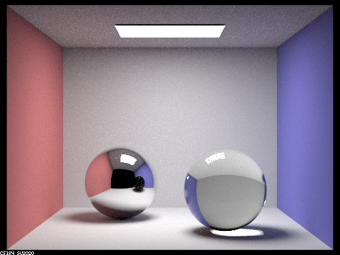
The refraction is now apparent since there are enough bounces for it to occur. However the reflection of the glass
spehere is off.
max_ray_depth = 4
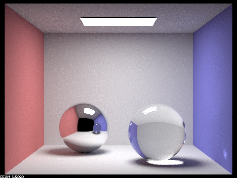
There is a light on the wall due to a caustic effect from the glass. The reflection sphere captures the glass’s
properties now.
max_ray_depth = 5
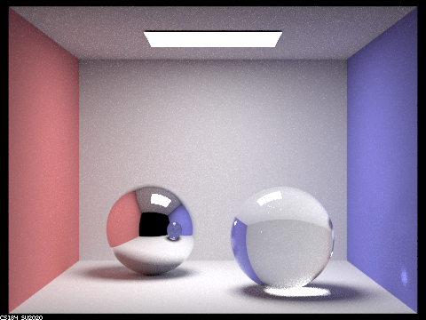
Generally minimal changes, extra light bouncing in the glass sphere has caused it to become a tiny bit brighter.
max_ray_depth = 100
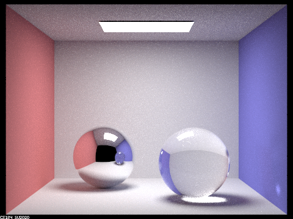
Light bouncing in the glass sphere caused a bright area on top of the glass to form.
Task 2
CBdragon_microfacet_au.dae
We rendered 4 images at 2048 samples per pixel, 1 sample per light, and 7 bounces and changed the alpha values
to be 0.005, 0.05, 0.25, and 0.5. The smaller alpha is the smoother and glossier the surface is, while larger
alphas have a more diffuse surface. We can see that in the images with alpha = 0.005 being the glossiest out of
the 4 images. alpha = 0.25 is still slightly glossy, so some light is still being reflected, while alpha = 0.5
has a diffuse, gold surface.
s = 2048, l = 1, m = 7
α = 0.005
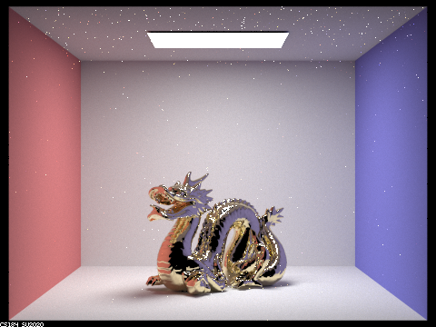
α = 0.05
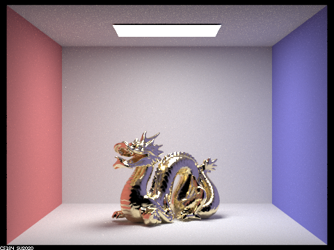
α = 0.5
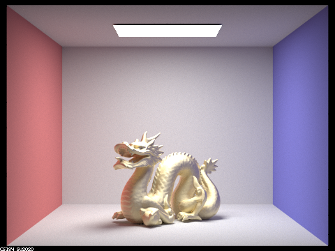
Cosine Hemisphere Sampling & Importance Sampling
When rendering CBbunny_microfacet_cup at 64 samples per pixel, 1 sample per light, and 7 bounces, the rendering
from cosine hemisphere sampling has a noiser image on the bunny. While the bunny surface is glossy, the
reflections from the wall are noisier and granier. For importance sampling, the rendering is more noise-free.
The bunny surface is glossy and reflects the walls in a noise-free way (not grainy). It is a more accurate
rendering off an actual copper surface in real life.
s = 64, l = 1, m = 7
Cosine Hemisphere Sampling
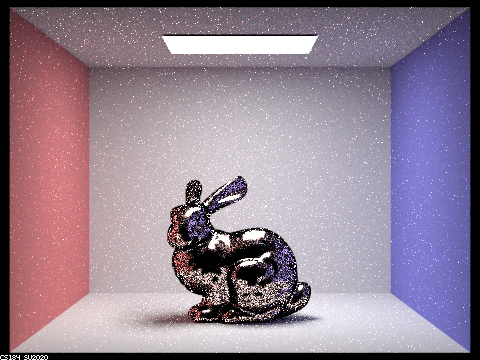
Importance Sampling
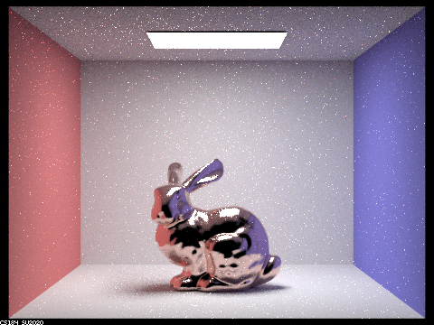
Other Conductor Material
For this image, we render CBbunny_microfacet with an aluminum-silver surface material instead of copper. Aluminum-silver
has eta = (1.3352, 1.0109, 0.68955) and k = (7.3398, 6.6157, 5.6471) values. Copper has values eta = (0.33228, 1.0162, 1.2474)
and k = (3.1646, 2.5785, 2.4603). These are the eta and k values of the corresponding material for wavelengths
values 614 nm (red), 549 nm (green), and 466 nm (blue).
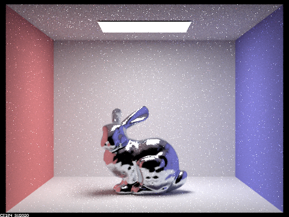